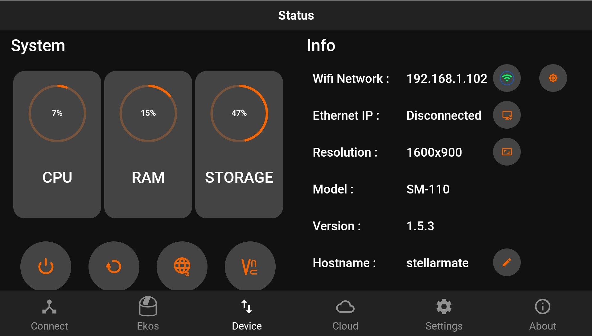
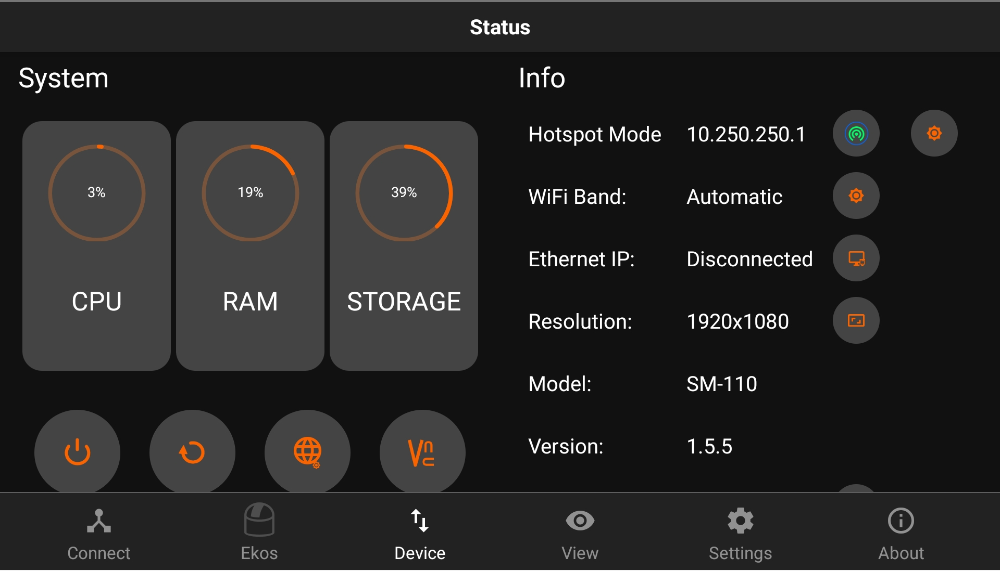
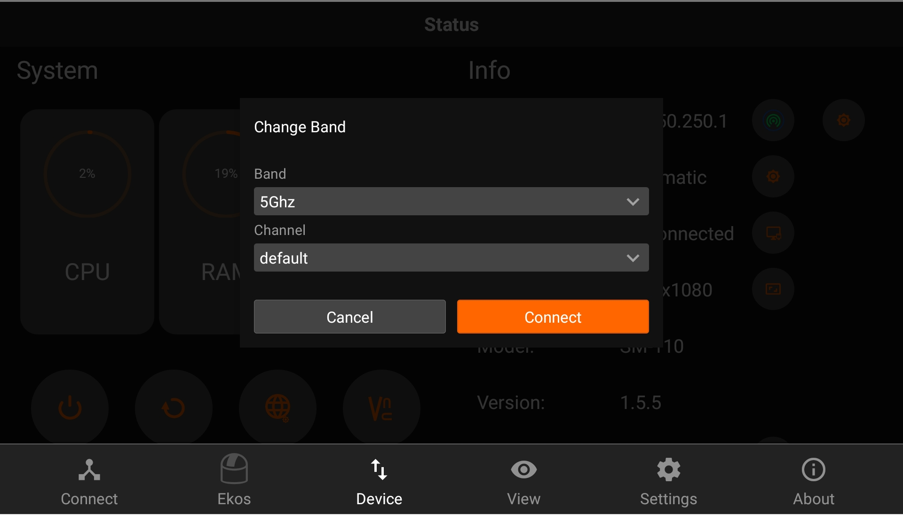
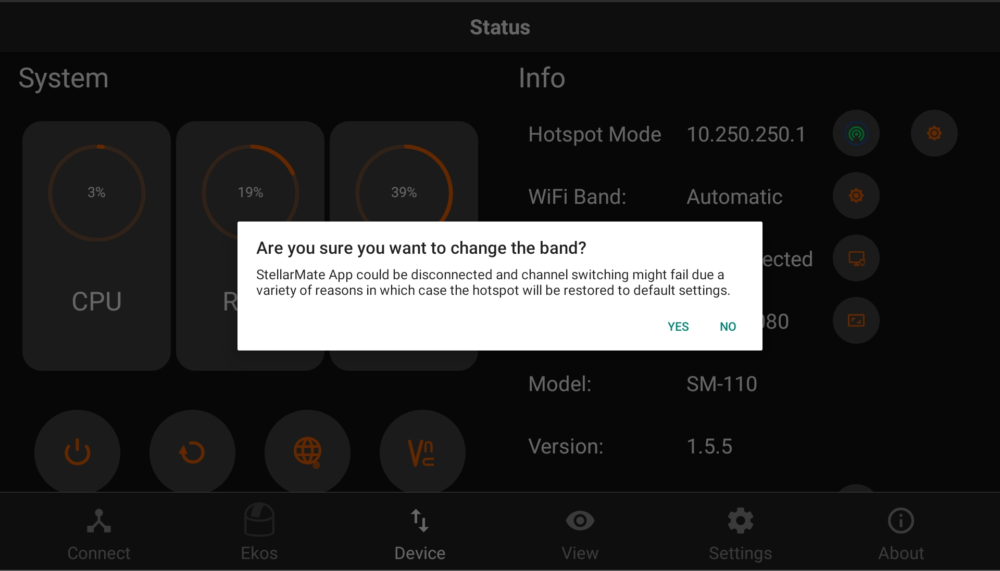

Device Status
The Device tab shows the health and information of your StellarMate. If StellarMate is connected to the internet, you can also run the software updater and install the latest firmware updates.

You can perform the following functions:
- Change Name: You can change device name (and its hostname) to another name without any spaces. For example, if you rename it to myobservatory, the host name shall be changed to http://myobservatory.local.
- Change IP
- Change Hotspot WiFi band (2.4GHz, 5GHz, or Automatic)
- Connect to WiFi / Forget WiFi
- Connect to Home WiFi: Select a WiFi network as detected by StellarMate and then supply the password if it is protected. After a successful connection, please wait up to 2 minutes before using any of the unit functions again.
- Forget WiFi: WiFi network information is removed and StellarMate reverts to HotSpot mode (IP Address 10.250.250.10). If the Unit is connected to your LAN via Ethernet, you can still access it via its LAN IP address like before.
- Access Web Manager
- Access VNC Viewer
- Restart Device
- Shutdown Device
Changing Hotspot WiFi Band
You can change the Hotspot WiFi band by clicking on the settings  button next to the WiFi Band label.
button next to the WiFi Band label.

You can now choose the Band you want to switch to, as well as the channel. We recommend using default if you are not sure which Channel to choose. After choosing the band you want to switch to, tap on connect to start the switching process.

An alert will pop-up informing you about what might happen if you proceed with this operation. Tap on YES to continue with this operation.
|
WARNING |
StellarMate App could be disconnected and channel switching might fail due to variety of reasons in which case the hotspot will be restored to default settings. |

You might have to wait until the hotspot starts broadcasting a Wi-Fi signal again, if it's successful, you will be able to connect back to StellarMate and find that it shows the band you switched to, in the Device tab.
If not, StellarMate will go back to the Automatic band.